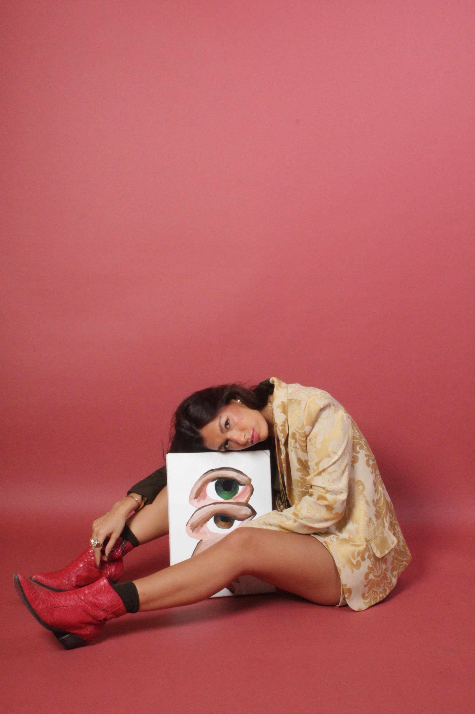
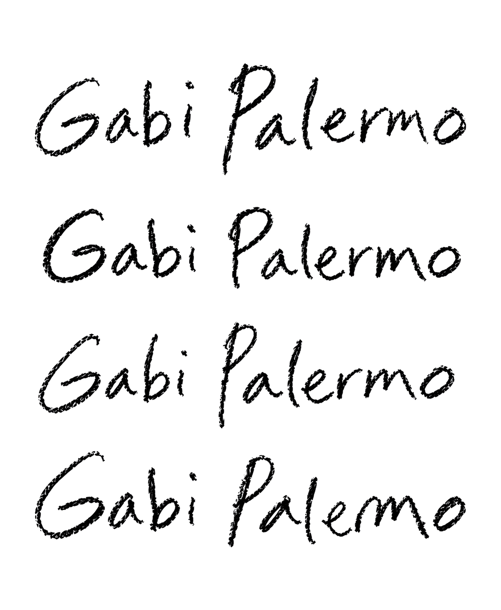
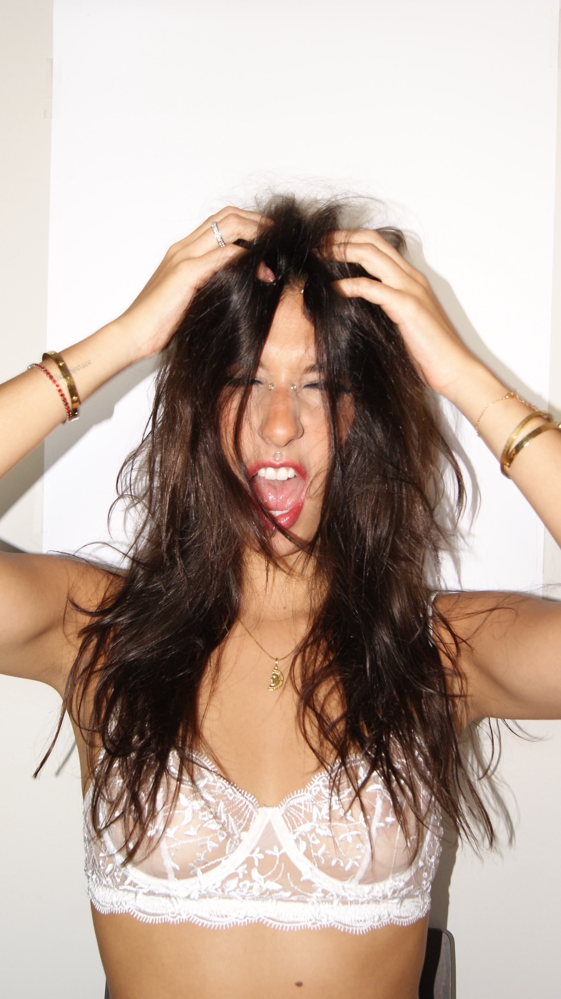

Quem é Gabriela antes de qualquer cargo
Eu gosto de construir.
Hoje, sou fundadora e diretora criativa da Palermo, uma marca que nasceu do desejo de transformar memória, identidade e ancestralidade em algo que pudesse ser vestido.
Também sou Head de Marketing da New Dog e faço parte da geração que continuará uma história que começou muito antes de mim. Cresci cercada por essa empresa familiar e hoje tenho a responsabilidade e o privilégio de imaginar como esse legado seguirá vivo no futuro.
Construir marcas. Construir imagens. Construir histórias. Construir coisas que tenham significado.
Não quero ser uma influencer, quero só ser eu.